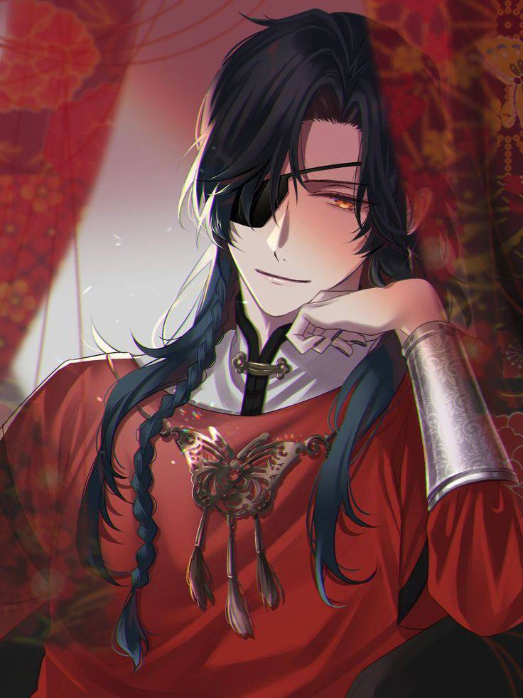
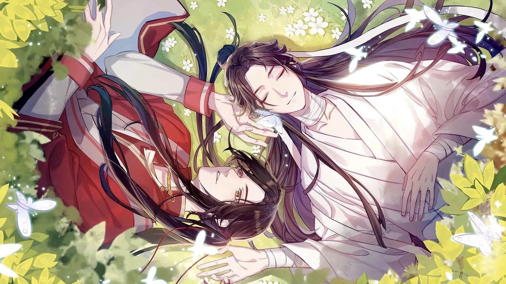

血雨探花 --
花城
Email:
HuaCheng@gmail.com
通靈口令:
仙樂太子有求必應

絕境鬼王
衣紅勝楓，膚白若雪，右眼戴着一隻黑色眼罩，妖豔動人，銀蝶追逐在衣襟袖間。 幼時為謝憐所救。後在銅爐山蠱城中用了十年破銅爐成為鬼王。 後建立了鬼市，是鬼市城主，非常富有。 謝憐第三次飛昇後與他再遇。 情深義重，為愛成絕，愛人謝憐。
經歷
天生異瞳
因為右眼是紅色，被視為異類，為人時飽受欺凌。
花城十歲前
人類
生無可戀
上元祭天遊行期間跳牆
在十歲那年有天被打得受不了，想在上元祭天遊行期間跳牆自殺，卻被謝憐接住。
花城十歲
人類
為謝憐而活
封入花燈
仙樂國與永安國交戰之際，進入軍隊為謝憐效忠，之後為謝憐戰死，死後魂魄被假道士抓走封入花燈。
花城十三歲
魂魄
為謝憐而活
化為鬼火
封入花燈被拿去賣錢時，被戰敗後落魄的謝憐買下放生，卻心存執念不肯離去，以鬼火的形態留在了人間。
未詳細記載年歲
鬼火
為謝憐而活
化為厲鬼
此後一直悄悄跟着謝憐，眼見謝憐被百劍穿心，在極度痛苦之下化為厲鬼，有了人形。
未詳細記載年歲
厲鬼
為謝憐而活
魂消魄散
原本謝憐計畫召喚亡靈向永安國復仇，可最終選擇堅守本心，不惜一切中斷時，花城主動替他承受亡靈的反噬詛咒，面對魂消魄散的結局。
未詳細記載年歲
無名黑衣亡魂
為謝憐而活
挖眼
他的殘魂飄到銅爐山，幫助一群活人逃了許多天，卻還是被萬鬼圍堵逼進死路，此時他突然發狂挖了自己的一隻眼睛，以此為代價煉出了彎刀厄命，扛過了萬鬼圍堵。
未詳細記載年歲
殘魂
為謝憐而活
建立鬼市
花城在銅爐山修煉成"絕"後，一邊發展勢力，建立鬼市成為鬼市之主，一邊一直在尋找謝憐。
未詳細記載年歲
絕境鬼王
為謝憐而活
贈信物
八百年後，在謝憐第三次飛升後，與謝憐重逢，並把自己的骨灰，製成戒指贈予謝憐。
未詳細記載年歲
絕境鬼王
為謝憐而活
化作萬千銀蝶
在謝憐與仙樂滅國的幕後主使戰鬥之際，渡給謝憐大量法力，助謝憐打破咒枷、直面敵人，謝憐雖然以險招取勝，但花城因法力透支而化為萬千銀蝶散去。
未詳細記載年歲
萬千銀蝶
為謝憐而活
上元節重逢
一年後花城重塑肉身，二人在上元節重逢，至此佳偶天成、深情雋永。
未詳細記載年歲
絕境鬼王
為謝憐而活
知名戰績
向上天庭的35位神官下了戰書
有33位神官不以為然，欣然應戰，最終慘敗；而剩下2位沒有應戰，恰巧逃過一劫。
未詳細記載年歲
大獲全勝
神官信徒改供俸花城
能力
擅長更換皮相，化出的皮相天衣無縫，與常人無異
從不以真容示眾，頻頻地更換皮相，導致連鬼市群鬼都弄不清他到底長什麼樣。
能言善辯，博文廣識
上天入地道古論今，時而斯文，時而惡毒，時而強硬，時而精闢，時而詭辯，當真是，鋼牙利齒滴水不漏，旁徵博引妖言惑眾。數位文神被他從天罵到地、從古罵到今，氣得一口血瀑直衝雲霄。
縱運之法了得
能控制自身的氣運，也可以把好運借給別人。
精通繪畫和雕刻
筆力絕好，用色清絕豔絕；能將神像的衣褶流線都雕刻的十分精緻。
監聽、追蹤、紀錄及定住他人的行動
可製造並操縱死靈蝶，作監聽、控制他人之用，還能錄製與播放畫面。
人際關係
謝憐
其他人
武器
武器
描述
作用
彎刀厄命
彎刀的刀柄處，雕着一隻銀眼睛，眼睛的花紋是幾條銀線組成的，雖然簡單卻極為傳神，若有生命
攻擊，助攻
死靈蝶
晶瑩剔透，雙翼閃閃，美極幽極，在陽光下，彷彿觸手即碎的夢幻泡影
監聽、通訊、錄像、錄音、回放、當武器、照明、帶人飛，定住人的行動
紅傘
傘面赤紅勝楓，豔烈如火
上可擋刀山，下可過油鍋，殺神利器，可以帶人飛
金箔扇
扇子小巧精緻，扇骨扇面均是以純金打造，色澤美而沉靜
翻手一扇，一道勁風挾著一排又一排的金箔，片片纖細，鋒芒銳利
花城&謝憐

想看天官賜福請點這
天官賜福--第二季--預告